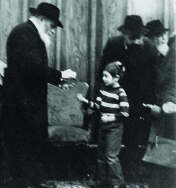

The Rebbe Sets the Time and the Name
“We have five daughters, boruch Hashem, but we have been praying for a son for many years,” said Mrs. Cohen from Migdal HaEmek to her neighbor Mrs. Penina Levy. “We’ve been to everyone. My husband and I went to great rabbis and kabbalists and asked for a bracha. They all prayed and even made promises, but we still do not have a son.”

“After a few days, I happened to meet my neighbor and got to talking to him,” said Avi. The neighbor is a veteran baal t’shuva and is close to Litvishe groups in Rechasim.
“He asked me about the belief that the Rebbe is Moshiach. At some point he expressed surprise about Chassidim writing to the Rebbe and putting letters into the Igros Kodesh. Since he mentioned Igros Kodesh, I told him about the answer I had opened to after I wrote for a bracha on his behalf.
“‘From the answer it seems that you will have a son when you reach forty,’ I said a little nervously.
“‘Another seven years?!’ he responded angrily. ‘That’s what you wish for me?’
“I realized I had made a mistake in telling him the answer because he wasn’t ready to hear it.’”
***
The years passed and Avi and Penina went to 770 for Shavuos 5762. They returned home a few days later, on 15 Sivan. They met their neighbors and Mr. Cohen told Avi that he had tried calling him in New York. “I wanted you to pray for us,” he said.
Avi said that in Migdal HaEmek they could write to the Rebbe and receive his bracha too. “Come over tonight and let’s write to the Rebbe.”
Mr. Cohen said “it wasn’t for him.” Avi responded, “Come over tonight and let’s talk over a cup of tea.”
The Cohens came over to visit the Levys. Mr. Cohen reiterated that he wanted to ask for a bracha and Avi suggested writing using the Igros Kodesh. Mr. Cohen politely refused. Avi tried to convince him and was ultimately successful.
Mr. Cohen composed a letter: “The girls are approaching shidduchim age and I ask for a bracha for them to find wonderful shidduchim. I also request a bracha for health and parnasa.” Then he stopped and there was silence in the room for a while. “I am also asking for a son. All the rabbis and kabbalists gave their blessings but we still do not have a son.”
He put the letter into volume 14 and Avi began reading page 256 where the book had opened. At first he read about a wedding. The letter ended with blessings: May it be Hashem’s will that there be the tenaim and the wedding after that in a good and successful time and the building of a Chassidic home, happy materially and spiritually. The Cohens were happy to hear the blessing and Avi continued reading the second letter on the same page:
“I just received the letter from the first day of Rosh Chodesh and read, in the closing of the letter, about your decision, which is surely the opinion of both of you, you and your wife, that when Hashem blesses you with a son you will call him Yosef Yitzchok, for length of days and good years. May the desires of your heart be soon fulfilled in this for the good and may you raise him to Torah, chuppa and good deeds to be a Chassid, yerei Shamayim and a lamdan.”
Mr. Cohen was surprised by this clear answer and wanted to see it for himself. Avi said that it looked as though the Rebbe wanted him to decide to name his son Yosef Yitzchok and then he would have a blessing for a son. Mr. Cohen was willing but his wife was not. She wanted to name a son for a relative.
“Think about passing by the Rebbe and his saying to you that if you call your son Yosef Yitzchok you will have a son, wouldn’t you agree to that?” Avi asked. But she was not convinced. “I have other plans for a name,” she insisted.
They concluded that Mrs. Cohen would ask a rabbi in Rechasim to whom they presented their questions in Halacha and emuna. The following day, the Cohens returned with a list of questions.
“Our rabbi wants to know what are the Igros Kodesh? Were they printed before or after 3 Tammuz? He also wants to know how this practice began and who follows this practice.”
Avi patiently answered each question. The answers were conveyed to their rabbi and the next day he gave his consent.
Nine months went by and on 7 Adar, in Mr. Cohen’s fortieth year, they had a son. They were ecstatic. In consultation with another rabbi, the baby was named Avrohom Yosef Yitzchok.
Berger. "The Rebbe Sets the Time and the Name." Beis Moshiach, no. 915 (February 13, 2014).